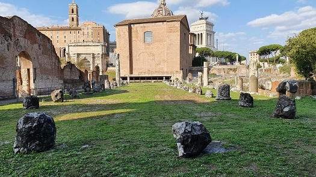
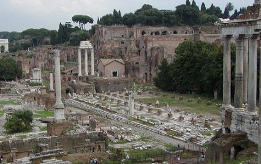
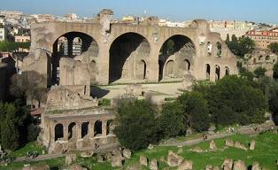
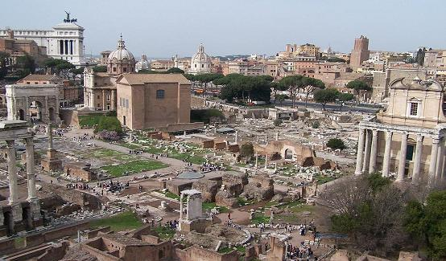
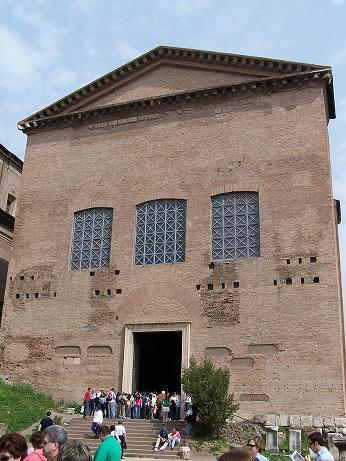
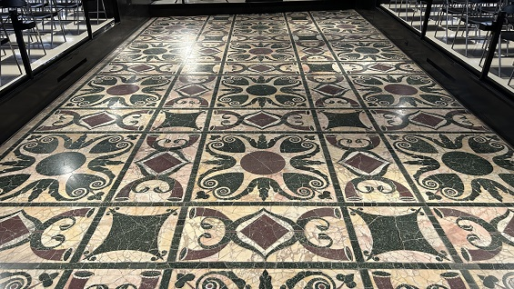
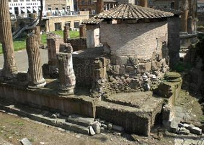
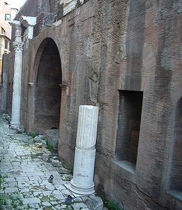

|
Basílica Emilia
Fue
edificada en el 179 a.e.c, por los censores Marco Emilio y Marco Fulvio
Nobilior. Ha sido destruida y reconstruida varias veces, en el 78 a.e.c.
por el cónsul Marco Emilio Lépido, por lo que recibió el nombre de
Basilica Aemilia. La basílica se emplazó sobre las Tabernae novae; un
incendio obligó a reconstruirla en 14 a.e.c. por Lépido y Augusto. La
última reconstrucción y su aspecto actual data del 410 cuando fue
restaurada después del incendio de Alarico.
La Basílica Emilia mide 70 x 29m, dividida en naves por hileras de
columnas. La nave central, de casi 12m está flanqueada por una más
pequeña al sur y otras dos al norte. La basílica de cara al foro tenía
un pórtico de dos pisos con dieciséis arcos sobre pilastras, detrás del
pórtico hay una serie de tabernae entre ellas se abren las tres entradas
que dan acceso al aula.
Junto a la Basílica Emilia se hallan los restos del templete de Venus
cloacina. Era un templo dedicado a la diosa con forma de pozo, que
comunicaba con la cloaca. Era el punto donde la cloaca Máxima entraba en
el Foro.

Basílica Julia
|
 |
Fue ordenada construir por Julio
César en el 54 a.e.c. sobre la Basílica Sempronia.
La Basílica Julia fue terminada por Augusto, se incendió en el 14
a.e.c. y fue reconstruida por Augusto dedicándola a sus hijos
adoptivos Cayo y Lucio en el 12. Sufrió un incendio en época de
Carino en 283. Fue restaurada en época de Diocleciano. Después del
saqueo de Alarico fue reconstruida por el prefecto urbano Gabinio
Vetio Probiano. Mide 109x48m. La nave central de 82x18m en torno a
la cual había cuatro naves menores abovedadas de dos pisos. La nave
central se dividía en cuatro partes por cortinas o estructuras de
madera que cuando la ocasión lo requería se retiraban para dejar el
espacio libre. Aun podemos observar la planta completa con las basas
de las colosales columnas centrales que sostendrían las cinco naves
del edificio y las escalinatas de acceso. Actuaba como sede del
tribunal de los Centunviros, ciento ochenta jueces que eran el total
de los cuatro tribunales juntos. En la escalinata del pórtico se han
hallado juegos grabados en el mármol. |
En la vía que discurre por delante de la basílica Iulia, había siete
columnas honorificas de época de Diocleciano, solo se conservan los
basamentos. Dos de ellas fueron restauradas en el siglo XIX.
Basílica Ulpia
La
basílica Ulpia formaba parte del foro de Trajano. Cerraba el lado
noroccidental siendo el edificio más grande del complejo. Las columnas
eran de granito gris. Fue saqueada durante la Edad Media y sus mármoles se
utilizaron para la construcción de iglesias y casas.

Basílica de Majencio
Su construcción se inició en el en el
306 por Majencio y fue terminada por Constantino; fue construida
sobre las ruinas del Templo de la Paz de Vespasiano. La basílica se
dividía en tres naves, una central y dos laterales. La nave central
tenía una altura de 35m, 3m más que las naves laterales; y 80m de
longitud. Es una de las más espléndidas y uno de los edificios más
importantes de su tiempo. Se singulariza por disponer de cubierta
abovedada de arista.
Alojaba una estatua colosal de Constantino construida en mármol y
bronce dorado. Algunas partes de esta estatua se hallan en el patio
del Palacio de los Conservadores en el Campidoglio de Roma.
Actualmente sigue en pie la pared norte. |
 |
En noviembre de 2019, excavando en el
complejo de los horrea piperataria, unos almacenes construidos en época
de Domiciano, donde se guardaban pimienta y otras especias; han
descubierto un laboratorio farmacológico público que seguramente
frecuentó el mismísimo Galeno de Pégamo.
Curia Julia (Hostilia)
Según la
tradición la primera Curia fue fundada por el Rey Tulio Ostilio en el siglo VII
a.e.c. del que tomó el nombre de Curia Hostilia.
Ha sido reconstruida varias veces. Fue reparada y ampliada por Sila; en el
52 a.e.c por un incendio causado por los incidentes relacionados con las
exequias del tributo Clodio, fue arrasada. Posteriormente César la
trasladó de su primitiva ubicación al lugar donde hoy se halla. Con su
muerte en el año 44 a.e.c. se interrumpió la obra, la nueva Curia cambió
el nombre por decreto Senatorial, pasando a llamarse Curia Iulia, y fue
acabada en el 29 a.e.c. por Augusto. Posteriormente fue restaurada por
Domiciano. En el 283 quedó destruida por el fuego del emperador Carino.
Del 284 a 305, la Curia fue reconstruida por Diocleciano, de esta
rehabilitación es el pavimento actual. En 412, la Curia fue de nuevo
restaurada, esta vez por el prefecto urbano, Flavio Annio Eucario
Epifanio.
La sala tiene 25,20m de largo y 17,61m de ancho. En los laterales hay tres
escalones que podían acoger cinco filas de sillas, unos trescientos
senadores. Destaca el «Altar de la Victoria» y su suelo. En época romana
estaba revestida de mármol y porticada.
Los Plutei de Trajano son unos parapetos de mármol tallado que fueron
descubiertos en el año 1872. Se encuentra en la Curia aunque no eran parte
de su estructura original.

|

Las puertas de bronce actuales son réplicas de las modernas; las
originales se trasladaron a la basílica de San Juan de Letrán por el papa
Alejandro VII en el año 1660. |

Era la antigua sede
del senado romano y donde los augures transmitían los deseos de los
dioses. Delante de la Curia se conserva el área del Comitium, donde
se desarrollaban las asambleas populares.
La Curia Julia es uno de los monumentos que han mejor han
sobrevivido gracias a su conversión en la iglesia de San Adrián en
el siglo VII; de esta época es la reconstrucción del tímpano y el
tejado. El 10 de julio de 1923 el gobierno italiano adquirió la
Curia Julia y el convento anexo de la Iglesia de San Adrián al
Collegio di Spagna.
|
Curia de Pompeyo
Se halla en la plaza de Largo
di Torre Argentina, detrás del templo de Juturna. Se conservan varias
hiladas de sillares. Aquí fue asesinado Julio César el 15 de marzo del 44
a.e.c.

Basílica de Neptuno
La Basílica de Neptuno data de época de
Augusto. Construida por orden de Agripa en honor del dios del mar Neptuno,
para celebrar sus victorias navales. Se restauró en época de Adriano. Sus
restos se hallan detrás del Panteón.

Basílica de Porta Maggiore
La
basílica neopitagórica de Porta Magigiore fue descubierta en el año
1917, durante las obras de modernización de la estación de ferrocarril.
La basílica tiene una planta de tres naves con ábside central. Los
techos y paredes están adornados por estucos con escenas mitológicas que
representan la salvación del alma y los secretos de la tradición
iniciática. Data del siglo I.
MENÚ |